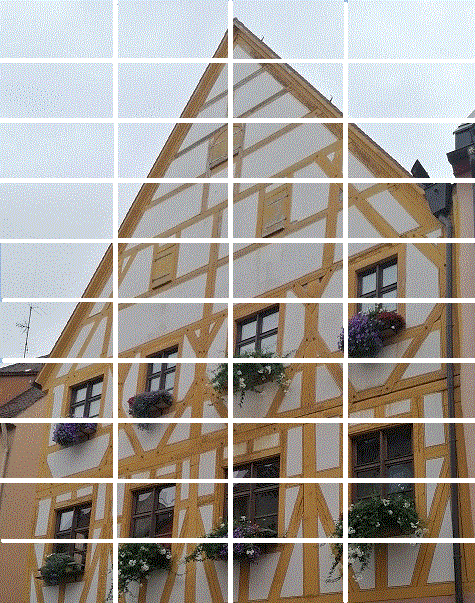

Nuremberg 2021
Voyage du 21 août au 3 septembre 2021
Promenades à Strasbourg (21 août 2021) et Nuremberg (23 aoüt)
En dépit du Covid, à Strasbourg les terrasses de restaurants grouillent de monde.
Passé le Rhin, le lendemain, notre navigateur nous promène dans tous les sens. Nous arrivons chez les Juillé-Souchon en fin de journée et dînons au restautant Fatal (sic) où les tables sont séparées par des écrans transparents. Ici comme partout le masque FFP2 est obligatoire. On nous demande notre passe sanitaire à l'entrée. Il faut flasher un code QR et remplir une fiche de passage (le "Tous Anti-covid" allemand). Le taux d'incidence sur 7 jours publié par l'Institut Robert Koch est en conséquence outrageusement bas en Allemagne: de l'ordre de 84, contre 148 en France, le 6 septembre (503 à Marseille et 669 en Guadeloupe).
Le lundi 23 dans l'après-midi, visite de la Frauenkirche (église Notre-Dame), une église gothique qui domine à l'est la place du marché,érigée sous le règne de l'empereur Charles IV pour servir de chapelle de la cour impériale en 1352-1361 à l'emplacement d'une sinagogue détruite. Le pignon à oriel est dû à Adam Krafft et date du 16ème siècle, comme le jaquemart dit "Männleinlaufen" qui rappelle l'octroi de la "Bulle d'or" par Charles IV en 1356. Le défilé des 7 électeurs devant l'empereur a lieu tous les jours à midi. Sur le mur gauche se trouve l'épitaphe de Peringsdorffer ou "Madone au manteau d'Adam Krafft (1498). L'autel de Tucher dans le choeur avec son triptyque, Crucifixion, Annonciation, Résurrection est un chef d'oeuvre de la peinture nurembergeoise qui date de 1440 environ.
Nous dînons dans le restaurant aménagé dans l'ancien Heilig-Geist Spital (Hôtel-Dieu), un bâtiment du 14-15° s. qui enjambe , supporté par deux voutes basses un bras de la Pegnitz. Du côté du pont Museumsbrücke, un oriel orne la façade. La cour supérieure présente des arcades de grès rose surmontées d'une galerie de bois comme autrefois de nombreuses demeures patriciennes de Nuremberg.
|
 |

|
Strasbourg et Nuremberg